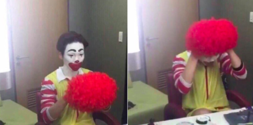
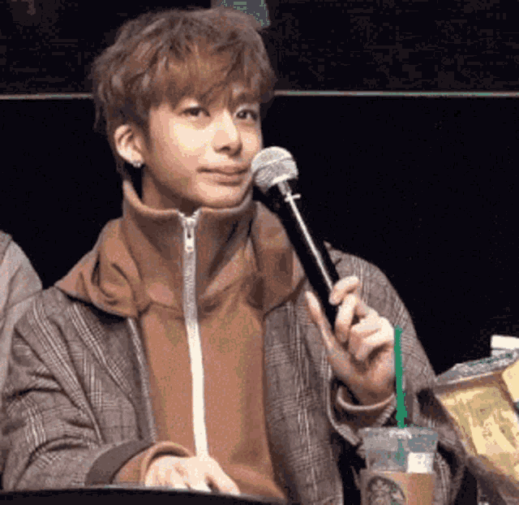
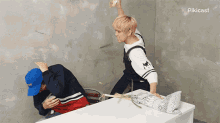
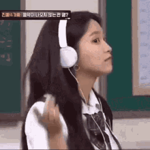

Boys Groups
Key (SHINee) se vestindo de palhaço
Em uma festa de Halloween de sua empresa em 2015, o membro Key se fantasiou de Ronald McDonald. O meme ficou tão viral que acabou furando a bolha kpop e se tornou muito popular nas redes sociais para expressar quando uma pessoa está sendo feita de boba.
Hyungwon (Monsta X) e seu starbucks
Continuando memes que saíram da bolha, o membro do grupo Monsta X, Hyungwon, pega um microfone para fazer um comentário durante um evento público, mas acaba desistindo. Ele abaixa o microfone e em seguida pega seu copo do starbucks e dá um gole de seu café gelado, permanecendo em silêncio.
Johnny e Taeyong (NCT) Vitamin C
Durante uma gravação ao ar livre, os idols Johnny e Taeyong do NCT estavam expostos ao sol forte. Ao comentarem sobre o momento, Johnny disse espontaneamente "Vitamin C!", quando na verdade o correto seria "Vitamin D", já que é a vitamina associada à exposição solar. O erro inocente e a forma natural como ele falou a frase, junto com a expressão de ambos fechando os olhos por causa da luz, fizeram o momento viralizar entre os fãs. A confusão entre as vitaminas virou uma piada recorrente.
Sandeul batendo no Baro (B1A4)
O integrante Sandeul decidiu, de forma totalmente espontânea, bater no colega Baro (ambos membros do grupo B1A4) usando um alho-poró como se fosse um bastão. Baro, surpreso, tenta se proteger enquanto ri. A situação foi totalmente inesperada e o contraste entre a agressividade brincalhona e o fato de usar uma verdura como "arma" tornou a cena engraçada.
Eric (The Boyz) e Ten (NCT) "You're in NCT! You should know this!"

Durante um desafio de leitura labial, Eric (The Boyz) e Ten (NCT) precisavam adivinhar qual era a palavra que estava sendo mostrada ao outro. A palavra mostrada a Eric foi "Lemonade", título de uma música do NCT 127 (uma das units do NCT). Ao tentar dar a dica, Eric comentou que era uma música do NCT 127.
Ten perguntou confuso: "Quais músicas eles têm?" já que ele faz parte de outra unit (WayV). Eric então respondeu, em tom de brincadeira e indignação: "Você é do NCT! Você deveria saber isso!"
A interação viralizou entre os fãs por refletir de maneira cômica uma situação real dentro do próprio grupo: o fato de que o NCT tem muitas sub-units, uma discografia extensa e vários integrantes, o que às vezes deixa até os próprios membros confusos.
Mark e Bambam (Got7) "Open my eyes"

Durante uma entrevista entre os membros do grupo GOT7, Mark lê a pergunta "qual a primeira coisa que você faz quando acorda de manhã?". De forma rápida e óbvia, BamBam respondeu: "Abro meus olhos".
A resposta simples e literal pegou todos de surpresa e gerou risadas, justamente por ser tecnicamente correta, mas completamente inesperada em um contexto de pergunta sobre rotina matinal.
Girls Groups
Yuqi (I-DLE) celular voando

Durante um vlog do grupo I-DLE, enquanto estava em um avião, o piloto pede a Yuqi que segurasse seu celular, e por conta da aterrissagem e da gravidade, o celular começou "levantar" em sauas mãos, dando a impressão de que estava voando.
Jennie e Jisoo (Blackpink) "Not bad but not good"
.gif)
Jennie e Jisoo (do grupo BLACKPINK) estavam cozinhando e experimentando a própria comida. Ao provar, Jisoo fez uma análise sincera e direta, dizendo: "Not bad, but not good" (Não está ruim, mas também não está bom).
Yeri (Red Velvet) com o fone de ouvido
Em um programa de variedade com o Red Velvet, a integrante Yeri está usando fones de ouvido para um jogo de adivinhação musical. Alguém tenta dizer algo, mas ela não ouve, justamente por estar de fone. Ela então gesticula para o fone com um tom debochado.
Ningning e Winter (Aespa) rindo

As membros do grupo Aespa, Ningning e Winter, começaram a rir enquanto estavam jogando no celular. A risada sincronizada e com timbres agudos, muitos fãs brincaram dizendo que as elas estavam fazendo um "high note" (nota alta).
Mamamoo fantasiadas de Teletubbies

Durante um evento cujo tema era "elegância", houve um mal-entendido nas instruções e o Mamamoo entendeu que precisavam ir de cosplay. Resultado? As quatro apareceram vestidas de Teletubbies, enquanto todos os outros artistas estavam de gala. A cena gerou muitas risadas tanto entre os presentes quanto entre os fãs, que até hoje usam o momento como exemplo da personalidade descontraída e autenticidade das meninas.
Nayeon e Jihyo (Twice) "I love you so much"

Durante uma interação divertida com o grupo, Nayeon começou a fingir ser uma boneca falante. Jihyo, entrando na brincadeira, começou a "apertar" um botão imaginário nela, fazendo com que Nayeon repetisse várias vezes a frase "I love you so much" com a voz fofa de boneca. Até que chegou um momento em que ela pediu para Jihyo parar, dizendo que, daquele jeito, ela iria "quebrar" de tanto repetir. A cena foi tão engraçada que virou um dos momentos favoritos dos fãs por mostrar o lado brincalhão das duas.
Chegamos ao fim!😊
E aí, já havia visto algum desses memes icônicos do K-pop? Esperamos que tenha se divertido explorando esse mundo de humor e criatividade!
Muito obrigado por visitar nosso site! Até a próxima, e não se esqueça de compartilhar seus memes favoritos com os amigos!